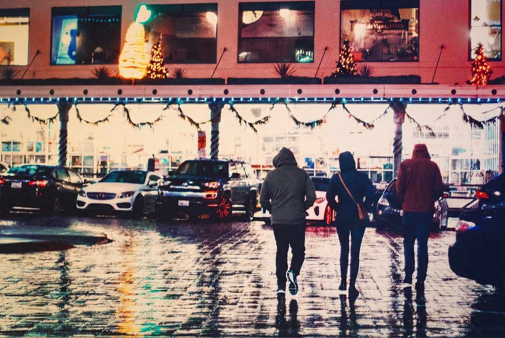

REFRACT
Photography Analysis & Enhancement

IMG_1251 copy.jpg
Multi-LLM Analysis
Original Score
After Editing
Original Review
The image has strong atmosphere with appealing reflections and a clear narrative of people moving through a wintery, decorated streetscape. Main opportunities are highlight control, slight WB refinement, and noise management to keep the mood while improving clarity and subject separation.
- Recover bright areas by pulling Highlights down (~-30 to -60) and Whites slightly down (~-10 to -25), then add a gentle S-curve to restore midtone contrast without clipping
- Cool white balance slightly (Temp -300 to -800K) and reduce magenta/purple cast with Tint toward green (-5 to -15); optionally use HSL to tame overly strong reds/magentas in the building/signage
- Apply moderate noise reduction (Luminance ~20-35, Color ~20-30) and then add restrained sharpening with masking (Amount ~40-70, Masking ~70-90) to protect smooth areas
This street photograph has strong compositional elements and intentional vintage aesthetic. The main issues are over-processing artifacts (excessive texture overlay and color grading) that detract from the natural scene. Selective refinements focusing on restoring tonal balance and subtle detail while respecting the nostalgic mood would significantly strengthen the image without compromising artistic vision.
- Reduce clarity/texture slider by -15 to -20 to smooth out the grainy vintage effect while maintaining artistic intent
- Lift shadows selectively in the foreground figures by +15-20 to reveal subtle silhouette detail without losing the backlighting effect
- Apply graduated filter to lower third to reduce the heavy color cast and restore more natural pavement tones
The image successfully emulates a high-ISO film stock (resembling Cinestill) with a moody, cinematic feel. Post-processing should focus on color correction to balance the strong magenta tint while respecting the intentional softness and grain.
- Selectively desaturate Magenta/Purple channels in the upper facade
- Apply a gentle S-curve to the tone curve
- Apply horizontal transform/straighten tool aligned to the storefront awning
Combined Improvements Applied:
- Recover bright areas by pulling Highlights down (~-30 to -60) and Whites slightly down (~-10 to -25), then add a gentle S-curve to restore midtone contrast without clipping
- Cool white balance slightly (Temp -300 to -800K) and reduce magenta/purple cast with Tint toward green (-5 to -15); optionally use HSL to tame overly strong reds/magentas in the building/signage
- Apply moderate noise reduction (Luminance ~20-35, Color ~20-30) and then add restrained sharpening with masking (Amount ~40-70, Masking ~70-90) to protect smooth areas
- Use local adjustments to lift the subjects slightly (Exposure +0.2 to +0.5, Shadows +15 to +30) and add subtle texture/clarity on their silhouettes; add a light vignette (-10 to -20) centered on the walkers
- Crop slightly from the top (and a touch from the left if needed) to reduce empty bright signage/windows and keep the trio closer to the upper third, maintaining leading lines from the wet pavement
- Reduce clarity/texture slider by -15 to -20 to smooth out the grainy vintage effect while maintaining artistic intent
- Lift shadows selectively in the foreground figures by +15-20 to reveal subtle silhouette detail without losing the backlighting effect
- Apply graduated filter to lower third to reduce the heavy color cast and restore more natural pavement tones
- Increase highlights recovery by -20 on the upper storefront windows to restore detail in the lit displays
- Apply selective sharpening to the main three figures and Christmas lights while avoiding noise amplification in sky areas
- Selectively desaturate Magenta/Purple channels in the upper facade
- Apply a gentle S-curve to the tone curve
- Apply horizontal transform/straighten tool aligned to the storefront awning
- Reduce Color Noise only (leave Luminance noise)
Re-Review After Editing
This is a strong street photography composition with excellent use of wet pavement reflections and holiday atmosphere. The intentional silhouetting and warm color grading should be preserved. Primary improvements should focus on enhancing the reflections and adding definition to architectural elements while maintaining the moody, cinematic aesthetic.
Strong atmosphere with compelling reflections and a clear street narrative. The main opportunities are controlling bright highlights, slightly neutralizing the cool/cyan cast, and enhancing subject separation while keeping the moody, filmic character.
This image captures a strong cinematic mood with a 'film still' aesthetic. While the background exposure is hot and there is a color cast, the gritty texture and rain reflections provide excellent character that should be enhanced rather than polished away.
Before & After